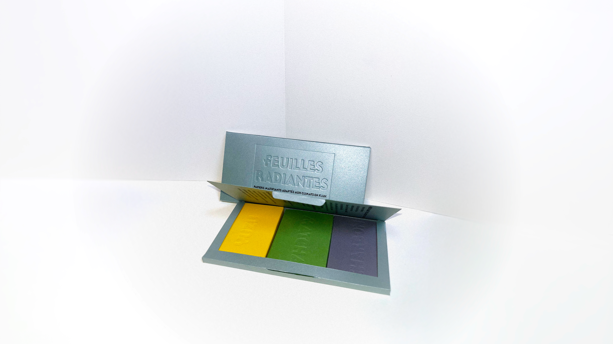
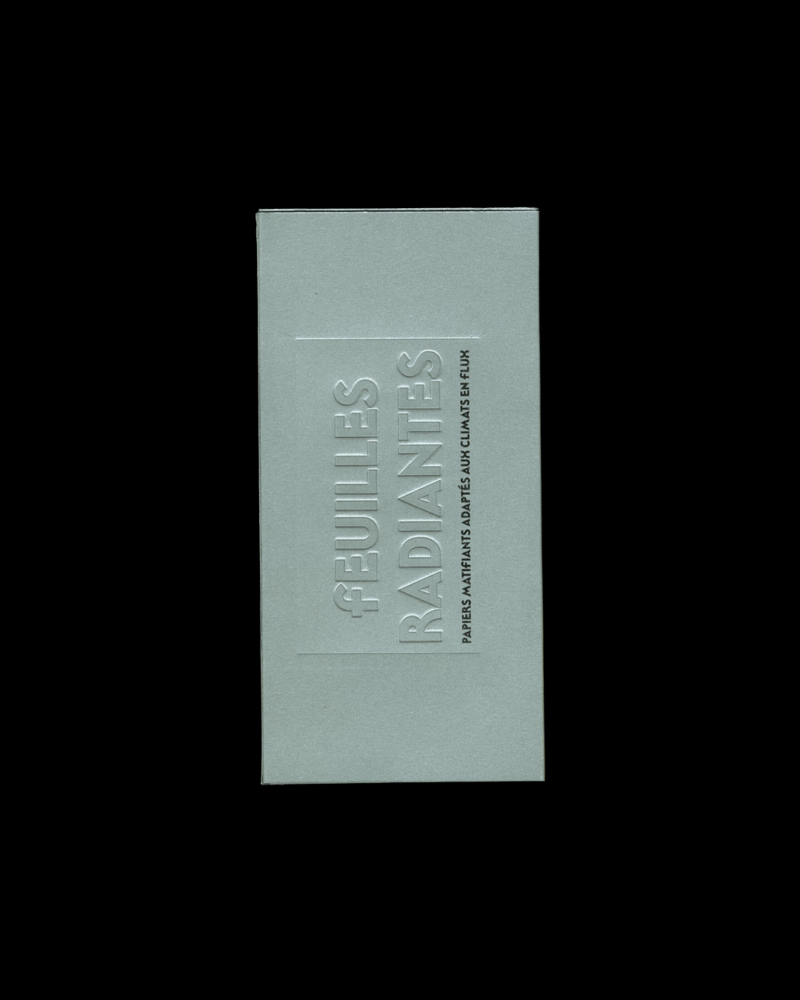
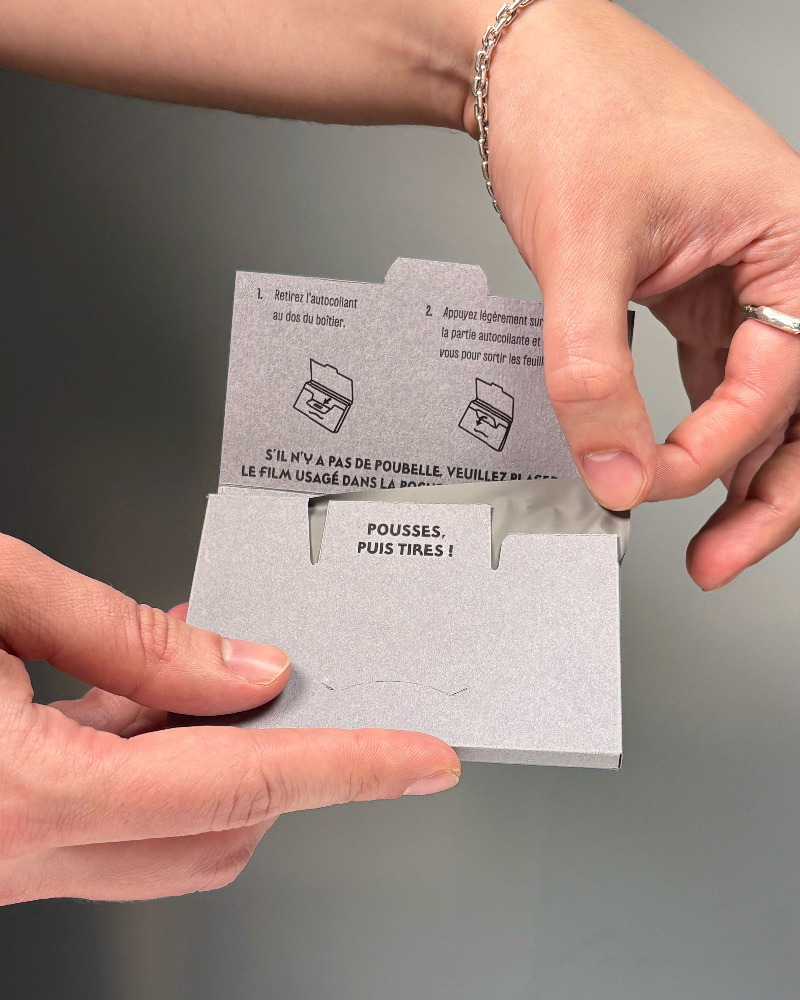

Feuilles Radiantes is a packaging
system for facial blotting papers
that restores ritual to a forgotten
gesture.
Completed as part of the user-centered project in the Packaging and eco-conception course under the supervision of Sylvain Allard at UQAM's School of Design, Winter 2026.

Rooted in 1920s Kyoto
aburatorigami, the project
reimagines the product for Quebec's
8-month winter. Departing from
flimsy, hyper-feminine packaging,
the design proposes a durable,
gender-inclusive, monomaterial
library box containing three
booklets (Matcha, Charcoal, Yuzu),
each addressing a specific skin
need.
The user opens, selects,
pulls a single sheet secured by a
repositionable sticker, and disposes
of it in a rear compartment. Feuilles
Radiantes transforms an everyday
utility into a mindful, intentional
moment of care.
The brand identity's typography
consists of Trujillo, a revival font
by Bastarda Type. It is printed on
uncoated paper to label the central
ingredient of the sheet cartridges,
and embossed on metallic paper
to brand the outer slipcase.


Credits
Brand identity /
Packaging design /
Prototyping /
Motion: Victor Percoco
Fonts: Trujillo BT, Kiffo BT